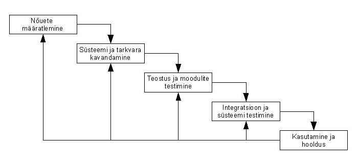

Mis on kosemudel?
Kosemudel (Waterfall) on lineaarne tarkvaraarenduse mudel, kus iga etapp viiakse lõpuni enne järgmise alustamist.
Mudel on range ja struktureeritud, kuid vähe paindlik muutuste suhtes.
Kosemudeli etapid
- Nõuete määratlemine
- Süsteemi ja tarkvara kavandamine
- Teostus ja testimine
- Integratsioon ja süsteemitest
- Kasutamine ja hooldus
Etappide selgitus
Iga etapp sõltub eelmisest ning muutused hilisemates etappides on keerulised ja kulukad.
Seetõttu sobib kosemudel hästi projektidele, kus nõuded on selged ja stabiilsed.
Arendusmudeli joonis

Head ja vead
| Head | Vead |
|---|---|
|
|